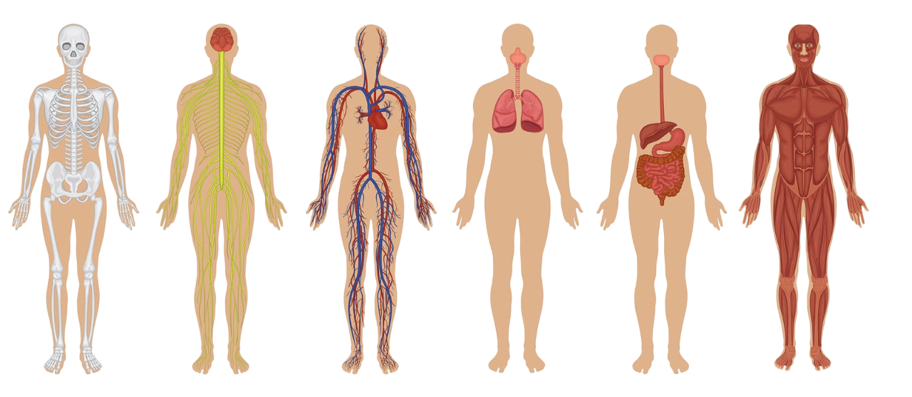

IL CORPO UMANO

Inizia
MENU
Apparato Circolatorio
Introduzione
Il Sangue
I Vasi Sanguigni
Il Cuore
Sistema Nervoso
Introduzione
I Due Sistemi
Sistema Nervoso Centrale
Encefalo
Sistema Nervoso Periferico
Sistema Nervoso
Neuroni
Apparato Respiratorio
Introduzione
La Respirazione
Apparato Respiratorio
Albero Bronchiale
Fasi Respirazione
Apparato Digerente
Inizio
Introduzione
La Bocca e la Cavità Orale
Faringe ed Esofago
Lo Stomaco
L'Intestino Tenue 1
L'Intestino Tenue 2
L'Intestino Crasso
Fegato, Cistifelea e Pancreas
Quiz
Crediti
Aiuto
Esci